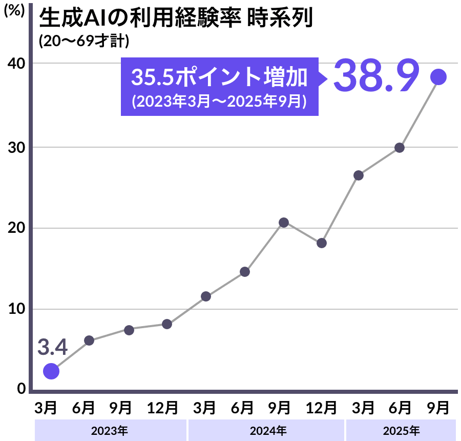

なぜ今、AI学習が必要なのか？
日本リサーチセンターの調査によりますと、日本の生成AIの利用経験率はここ数年にかけて増加しています。
これからも、生成AIは私たちの日常に深く浸透していくでしょう。
多くの企業で導入・検討が進む中、AIを適切に使いこなせる人材へのニーズもますます高まっています。
本講座では、プロンプト作成の基礎から実践的な活用方法まで、現場で役立つスキルを体系的に学べます。
日々の業務効率化はもちろん、新しい企画やアイデア創出にも生成AIを活用し、自分らしい働き方の可能性を広げていきましょう。

出典：日本リサーチセンター「生成AIに関する調査」（2023年3月〜2025年9月）